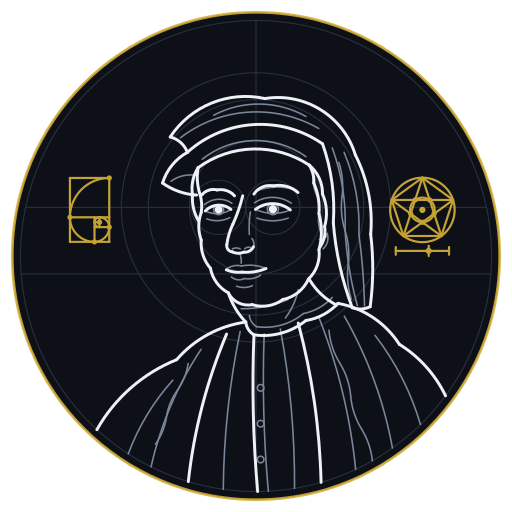

Leonardo Pisano (Fibonacci)¶

Leonardo Pisano (c. 1170 – c. 1245), remembered as Fibonacci, reshaped European mathematics twice over: first by introducing Hindu-Arabic numerals and the golden rabbit recurrence in Liber Abbaci (1202/1228), and then by uniting Euclidean construction with Pisan land-surveying, Archimedean circle bounds, and Platonic polyhedra in Practica Geometriae (1220).
Books in This Collection¶
Latin & English Edition · 1220 (ed. Boncompagni, 1862) · 8 Distinctions · 4 Tracks
Practice of Geometry (Practica Geometriae) — Fibonacci’s complete eight-distinction treatise on Pisan metrology, Heron’s incenter proof, 96-gon circle bounds, field divisions (De divisione camporum), and regular polyhedra in a sphere, paired with 10 calibrated interactive SVG plates.
Latin & English Edition · 1202 / 1228 (ed. Boncompagni, 1857) · Chapters I & XII · 4 Tracks
The Book of Calculation (Liber Abbaci) — The historic opening chapter on the nine Indian figures and zero (zephirum) paired with Chapter XII.7’s famous rabbit problem (Quot paria coniculorum), tracing the recurrence $F_{n+1} = F_n + F_{n-1}$ and its convergence to $\phi$.
Key Features¶
Medieval Latin & English Scriptorium
Read Boncompagni’s critical Latin editions (1857, 1862) side-by-side with direct English translation, executive summaries, and historical commentary across every distinction and chapter.
From Pisan Surveying to Platonic Solids
Follow Fibonacci from pertica field mensuration and Euclid’s lost On Divisions of Figures to Hypsicles’ Book XIV ratios of the dodecahedron and icosahedron.
Exact Rational & Radical Verifications
Verify Heron’s proof on $(13, 14, 15)$, Fibonacci’s 96-gon $\pi$ bounds, Ptolemy’s quartic, and rabbit-sequence convergence to $\phi$ in Exact Symbolic Demonstrations.
Reference & Project¶
Scholarly Apparatus
People — Profiles of Leonardo Pisano, Baldassarre Boncompagni, Michael Scot, Euclid, and Archimedes
Bibliography — Boncompagni Scritti (1857, 1862) and medieval manuscript witnesses
Concordance & Glossary — Cross-corpus links and Pisan metrology lexicon
About This Project
About — Editorial scope, symbolic grounding, and source provenance
Using This Edition — Multi-track switching and navigation guide
Log & Modules — Development journal and Python API reference